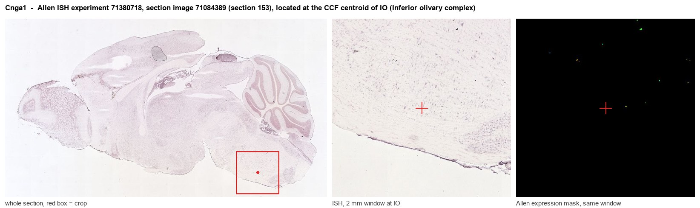

Cnga1
Cyclic nucleotide-gated channel alpha-1 (CNG channel alpha-1) (CNG-1) (CNG1) (Cyclic nucleotide-gated cation channel 1) (Cyclic nucleotide-gated channel, photoreceptor) (Rod photoreceptor cGMP-gated c
Spatial tier: STRICT_EXCLUSIVE · Class: ION_CHANNEL · Top region: IO (Inferior olivary complex) · Positive regions: 2/554
Function in IO: evidence, prediction, innovation
- Gene function
- Cnga1 encodes CNGA1, the principal pore-forming subunit of the rod photoreceptor cyclic nucleotide-gated channel. It is directly opened by cGMP (not by voltage) and, with CNGB1, carries the depolarising Na+/Ca2+ dark current that light-triggered cGMP hydrolysis shuts off. Loss of CNGA1 in humans and mice causes autosomal recessive retinitis pigmentosa with early rod dysfunction and progressive photoreceptor death.
- Region function
- The inferior olive is the sole source of climbing fibres to Purkinje cells; its electrically coupled, subthreshold-oscillating neurons generate complex spikes that time movements and drive cerebellar motor learning and error signalling.
- Published in this region
- inferred No region-specific literature found. The closest published findings are that CNG channels are functional in other central neurons, with cGMP-gated currents recorded in cerebellar granule cells (Lopez-Jimenez et al. 2012, J Cell Physiol) and CNGA1/CNGA2 expression reported in the adult hippocampal neurogenic niche (Podda et al. 2013, PLoS One); the characterised Cnga1 knockout phenotype is purely retinal (Liu et al. 2021, FASEB J).
- Predicted function
- Prediction: a cGMP-gated cation conductance in inferior olivary neurons would let NO/soluble guanylyl cyclase signalling, which is prominent in the olivo-cerebellar loop, directly bias membrane potential and thereby the amplitude, phase and coupling of the 4-10 Hz subthreshold oscillation that times complex spikes. Deleting Cnga1 in the olive should shift oscillation frequency or synchrony and degrade cerebellar timing-dependent learning (eyeblink conditioning, locomotor adaptation) without affecting gross motor strength; cGMP analogues or sGC stimulators should alter complex spike rate, and l-cis-diltiazem should occlude that effect. Verification by smFISH in Foxp2+/Slc6a5+ olivary neurons is the essential first step.
- Innovation
- ★★★★★ 5/5 CNGA1 is treated as a retina-only gene, so a cGMP-gated channel in the climbing-fibre pacemaker would be entirely unexplored territory.
- Tools
- Cnga1 knockout mice (Liu et al. 2021) and CNGB1 knockout lines; channel blocker l-cis-diltiazem; membrane-permeant agonists 8-Br-cGMP and CPT-cGMP plus sGC stimulators; anti-CNGA1 monoclonal antibody PMc 1D1; inferior olive access via Foxp2-Cre or Ptf1a-derived drivers; Allen mouse ISH dataset 71380718.
- References
Direct evidence located at the region

Allen ISH experiment 71380718, section image 71084389 (section 153): the section that contains the CCF centroid of Inferior olivary complex according to the Allen image-to-atlas alignment (reference_to_image), with a 2 mm window around that point. Left: whole section, red box = window. Middle: ISH signal. Right: Allen's expression-mask view of the same window. open this image in the Allen viewer
Direct spatial evidence


Regional expression figure

Predicted WMB × fine-CCF profile; not direct full-transcriptome spatial measurement.
Spatial profile
Evidence and specificity
- Evidence status
- PREDICTED_FINE
- Direct sources
- None; predicted localization only
- Exclusive threshold
- 12 positive regions out of 554
- Spatial specificity
- 0.516
- Top-region fraction
- 0.355
- Filter status
- PASS
Interpretation limits
- Cell-type-to-region projection is imputed expression, not direct spatial measurement.
- Adult reference atlases do not establish stability across age, sex, strain, state, or disease.
- Transcript abundance does not guarantee protein abundance or genetic-tool performance.